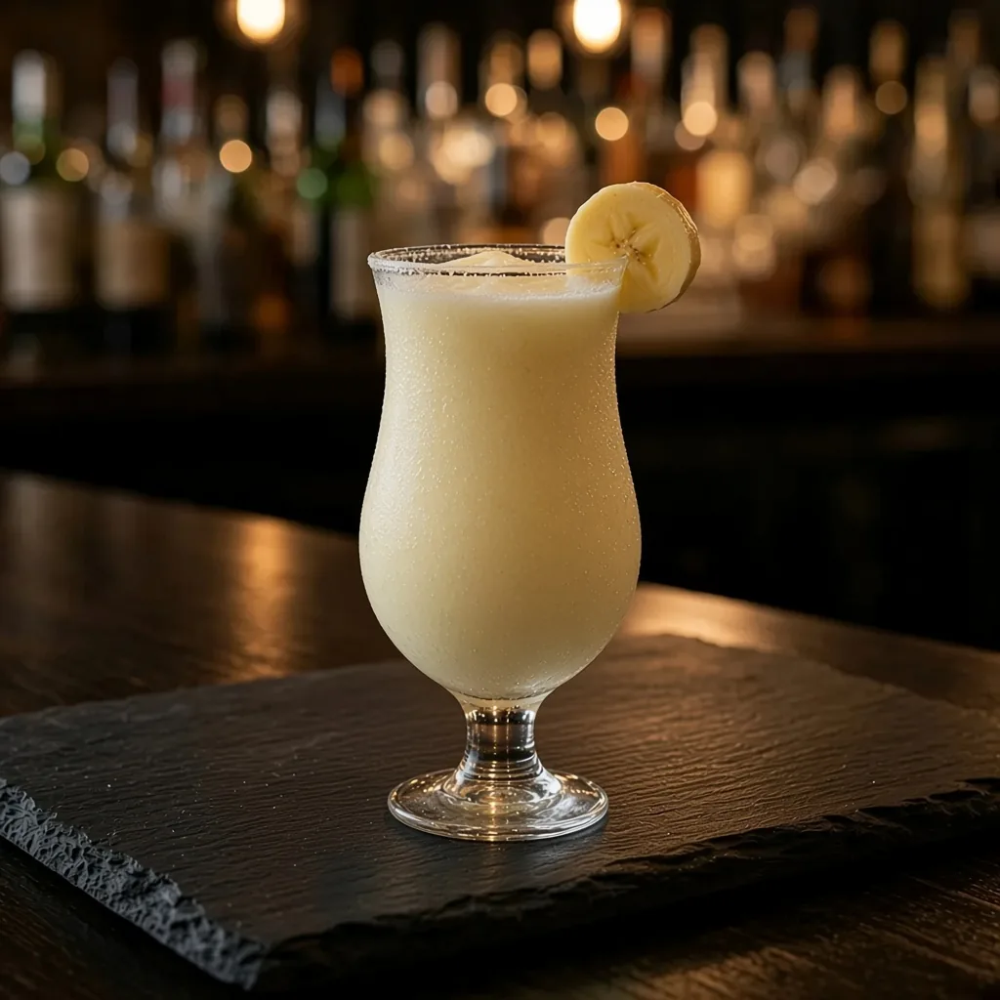

Home / Drinks / Frozen drinks
Frozen Banana Daiquiri
Rum, lime and frozen banana. Thick, creamy and not too sweet.

Home / Drinks / Frozen drinks
Rum, lime and frozen banana. Thick, creamy and not too sweet.

Replace the rum with 4 oz milk or coconut milk.
Pour it, then start a room. Drinking is optional in every game.
 Frozen Watermelon MargaritaFrozen watermelon stands in for the ice, so the flavour does not get watered down.
Frozen Watermelon MargaritaFrozen watermelon stands in for the ice, so the flavour does not get watered down.
 Frozen Espresso MartiniCoffee, vodka and coffee liqueur as a frozen slush. Use coffee ice cubes for the best flavour.
Frozen Espresso MartiniCoffee, vodka and coffee liqueur as a frozen slush. Use coffee ice cubes for the best flavour.
 Frozen Aperol SpritzThe orange spritz, blended with ice for a hot day.
Frozen Aperol SpritzThe orange spritz, blended with ice for a hot day.
 BushwackerA Caribbean chocolate-coconut milkshake with dark rum and coffee liqueur.
BushwackerA Caribbean chocolate-coconut milkshake with dark rum and coffee liqueur.